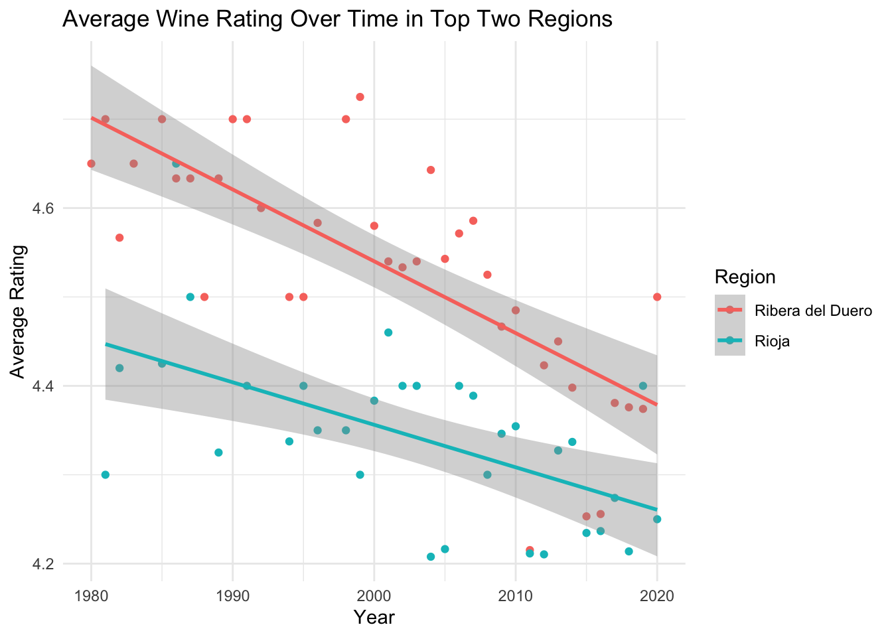

Chapter 25 An example of a past Exam (2020)
This is a previous year’s exam!
I am leaving this here so you can see what the final exam will look like.
This exam includes four questions that test different aspects of your learning during this course: data wrangling, data visualisation and statistics. Each question is broken down into a number sub-questions.
Your work should be handed in as a single PDF. The number of each question should be clearly indicated, and the answer to each question should start on a new page.
For each question you must provide the R code you used to answer the
question. The code should include comments to explain what you are
doing. The code should be provided as text using a fixed-width font such
as Courier. The rest of your answers should be in another
font (e.g. Times New Roman, Cambria). Please use text rather
than a screenshot of your code.
You can use the Microsoft Word template provided alongside these questions (here) as guidance.
- Plots and tables should have appropriate captions.
-
Plots should be produced using
ggplot. - Remember that you can make “panels” of plots (e.g. Fig 1A, B)
- Axis labels are important. Sometimes you may want to edit them to be different from a data column name.
- Reporting of any statistics should be appropriate to the type of analysis you have done. There are examples in the course materials.
- Reporting of methods and results should be written in the style of a scientific paper (again, there are examples in the course materials).
If you don’t understand any aspects of the questions, please ask for help!
Hand in deadline is 8th January 2021 at 23:59 CET
You MUST submit your work via Blackboard (not email!)
1) Amazonian fires (10 points)
The dataset amazon.csv is a record of fire occurrence in the Amazon rainforest. The data set has columns for year, the state where the fire occurred, the month, and the number of fires reported. The month is recorded in Portuguese, so you will probably want to either create a “look up table” and use left_join to convert the month to a number, or use the dplyr function recode. There are many states and it might be useful to group them. For example the legal Amazon includes the states of Acre, Amapá, Pará, Amazonas, Rondonia, Roraima, Mato Grosso, Tocantins, and Maranhão.
Produce a graph showing the the total number of fires per year through time as points joined by lines.
Produce a table showing the minimum, maximum, mean and median number of fires per month in the legally-defined Amazon.
Produce a graph using box plots to show the distribution of the number of fires per month in the Amazon (i.e. month on x-axis, number of fires on y-axis).
a) Produce a graph showing the the total number of fires per year through time as points joined by lines.
# Import data
amazon <- read.csv("CourseData/amazon.csv")
amazon <- read.csv("CourseData/amazon.csv") %>%
mutate(number = ifelse(number >= 1000,
1 + (number - 1000) / 1000, number
))
# A) MAKE GRAPH OF TOTAL FIRES PER YEAR.
(amazon_YearlyFires <- amazon %>%
group_by(year) %>%
summarise(n.fires = sum(number)))## # A tibble: 20 × 2
## year n.fires
## <int> <dbl>
## 1 1998 20014.
## 2 1999 26883.
## 3 2000 27351.
## 4 2001 29072.
## 5 2002 37391.
## 6 2003 42761.
## 7 2004 38453.
## 8 2005 35005.
## 9 2006 33832.
## 10 2007 33037.
## 11 2008 29379.
## 12 2009 39117.
## 13 2010 37037.
## 14 2011 34634.
## 15 2012 40085.
## 16 2013 35146.
## 17 2014 39621.
## 18 2015 41208.
## 19 2016 42212.
## 20 2017 36686.(A <- ggplot(amazon_YearlyFires, aes(x = year, y = n.fires)) +
geom_point() +
geom_line())
You may have slightly different values if you used old data that had some fractional numbers (e.g. 1.543 is not “1 point 5” fires, but one thousand five hundred!). Well done those of you that spotted that issue. Don’t worry if you didn’t - you don’t lose points!
Some of you may also have made plots that included ONLY data from the “legal amazon”, by filtering to those states only. Again, that is no problem if you did that.
b) Produce a table showing the minimum, maximum, mean and median number of fires per month in the legally-defined Amazon.
# First filter to only include the "legally defined amazon"
# Check that all are included in the result (you might need to
# check and fix "foreign" letters - a typical data cleaning task!)
legalAmazonStates <- c(
"Acre", "Amapa", "Pará", "Amazonas", "Rondonia",
"Roraima", "Mato Grosso", "Tocantins", "Maranhao"
)
legalAmazon <- amazon %>%
filter(state %in% legalAmazonStates)
# Next make a "look up" table to convert month name
# to a numeric value 1-12
(monthLookup <- amazon %>%
select(month) %>%
unique() %>%
mutate(month_numeric = 1:12))## month month_numeric
## 1 Janeiro 1
## 21 Fevereiro 2
## 41 Março 3
## 61 Abril 4
## 81 Maio 5
## 101 Junho 6
## 121 Julho 7
## 141 Agosto 8
## 161 Setembro 9
## 181 Outubro 10
## 201 Novembro 11
## 221 Dezembro 12# Then use left_join to add the numeric month to the data
# then group_by month and year, and summarise to get total
# number (i.e. sum for each month in each year for whole amazon)
# Then group_by month again and calculate the min/mean/max etc.
table1 <- legalAmazon %>%
left_join(monthLookup) %>%
group_by(month_numeric, year) %>%
summarise(sumFires = sum(number)) %>%
# total fires per month, per year
group_by(month_numeric) %>%
# group by month to get min/max/median per month
summarise(
minimum = min(sumFires), mean = mean(sumFires),
median = median(sumFires), maximum = max(sumFires)
)
table1## # A tibble: 12 × 5
## month_numeric minimum mean median maximum
## <int> <dbl> <dbl> <dbl> <dbl>
## 1 1 0 1382. 1370. 3257
## 2 2 0 880. 801 1859.
## 3 3 0 886. 857 1612
## 4 4 0 802. 792 1566
## 5 5 0 980. 1028. 1938
## 6 6 333. 1480. 1526. 2670
## 7 7 480. 1983. 2054. 3422.
## 8 8 59.4 976. 907. 3337.
## 9 9 125. 486. 298. 1284.
## 10 10 594. 1966. 2140. 3113.
## 11 11 634. 1796. 1673. 3598.
## 12 12 260. 1205. 1214. 2207.This question was HARD. It could also have been interpreted in a couple of different ways. For example, it could be interpreted as asking for the mean/median/max (etc.) by state. What I actually meant was to find the TOTAL across ALL of the legal Amazon for each month and each year (20 years * 12 months = 240 values), and then produce a table summarising the mean, min, max etc. of these values.
If you calculate the statistics “by state” as well as by year and month you end up with a different table, like this:
table1 <- legalAmazon %>%
left_join(monthLookup) %>%
group_by(month_numeric) %>%
summarise(
minimum = min(number), mean = mean(number),
median = median(number), maximum = max(number)
)
table1## # A tibble: 12 × 5
## month_numeric minimum mean median maximum
## <int> <dbl> <dbl> <dbl> <dbl>
## 1 1 0 138. 44.5 960
## 2 2 0 88.0 25 871
## 3 3 0 88.6 19 820
## 4 4 0 80.2 15.5 947
## 5 5 0 98.0 12 942
## 6 6 0 148. 32.5 979
## 7 7 0 198. 23.5 989
## 8 8 0 97.6 4.77 960
## 9 9 1 48.6 5.88 998
## 10 10 1 197. 7.70 960
## 11 11 0 180. 88 973
## 12 12 0 120. 43.5 846I have been lenient with the marking on this one!
c) Produce a graph using box plots to show the distribution of the number of fires per month in the Amazon (i.e. month on x-axis, number of fires on y-axis).
Here I am looking for a box plot of the number of fires per month in the Amazon (or legal Amazon). In other words, each row of data (each data point) should be the total number of fires across all of the states, for each month, in each year.
To check that you are on the right track you could look at the dimensions of the data frame you create - with 12 months per year and 20 years of data you can expect 240 rows of data (though perhaps not all years include all months of data). Nevertheless, it gives you a ballpark figure and if your dataset is not approximately this size, something has gone wrong!
# Use summarise to calculate the the total number of
# fires per month.
# In this case I use the legal amazon, but it is acceptable
# to look at the whole data set. You need to make sure that
# you are using the numeric month.
# Group by year and month to calculate the total number of
# fires in each year and month.
# Create the dataset by filtering to legal amazon, adding
# numeric month, grouping by year and month and finally
# summarising.
amazon2 <- amazon %>%
filter(state %in% legalAmazonStates) %>%
left_join(monthLookup) %>%
group_by(year, month_numeric) %>%
summarise(n_fires = sum(number))
# Check number of rows
nrow(amazon2)## [1] 239# Plot the data
ggplot(amazon2, aes(x = as.factor(month_numeric), y = n_fires)) +
geom_boxplot() +
xlab("Month") +
ylab("Total number of fires")
Common mistakes -
Understanding how group_by and summarise work is key to answering this question.
To ensure that the months are displayed in the correct order you need to use the numeric month. Failure to do that will cause the plot to be presented in alphabetical order (i.e. with December falling before January!). However, box plots require that the input variable is a factor so you also need to convert back to a factor before plotting.
2) Coral bleaching (10 points)
Coral bleaching is when coral polyps expel the endosymbiotic algae that live within their tissues. Although the coral can survive bleaching events, their algae provide most of their energy, so the coral can eventually starve and die. It is thought that deeper corals (from the mesophotic zone) might be protected from bleaching events because the depth offers more stable conditions with fewer stressors. This is known as the “deep reef refugia hypothesis”.
To test this idea, a transplant experiment was carried out on the coral Agaricia lamarcki at the island of Utila, Honduras. In the study, intact samples of the coral were moved from deep (mesophotic) reefs to the shallow reef and vice versa. They were left there for 8 months and then their colouration was measured to assess bleaching: lower colour intensity means more bleaching. The data are provided in coral.csv.
plot the data (e.g. with a box plot)
carry out a randomisation test to determine if there is a significant difference in the colour intensity in the two habitats. Write (i) a brief method description and (ii) a summary of the results.
a) plot the data (e.g. with a box plot)
coral <- read.csv("CourseData/coral.csv", stringsAsFactors = TRUE)
ggplot(coral, aes(x = habitat, y = intensity)) +
geom_boxplot() +
geom_jitter(width = 0.2)
b) carry out a randomisation test to determine if there is a significant difference in the colour intensity in the two habitats. Write (i) a brief method description and (ii) a summary of the results.
First we need to calculate the observed difference between the two habitats.
You can get the mean values like this (there are other ways):
coral %>%
group_by(habitat) %>%
summarise(meanIntensity = mean(intensity))## # A tibble: 2 × 2
## habitat meanIntensity
## <fct> <dbl>
## 1 mesophotic 187.
## 2 shallow 81.8…then subtract one value from the other “by hand”.
You could also do the whole calculation using the pipes syntax like this:
(obsDiff <- coral %>%
group_by(habitat) %>%
summarise(meanIntensity = mean(intensity)) %>%
pull(meanIntensity) %>%
diff())## [1] -105.5377Next we ask “is the observed difference significantly larger than what we would expect by chance?”.20
shuffledData <- data.frame(rep = 1:2000) %>%
mutate(shuffledDiffs = replicate(
2000,
coral %>%
mutate(habitat = sample(habitat)) %>%
group_by(habitat) %>%
summarise(meanIntensity = mean(intensity)) %>%
pull(meanIntensity) %>%
diff()
))I can plot these data, and add a line to show where the observed value is
ggplot(shuffledData, aes(x = shuffledDiffs)) +
geom_histogram() +
theme_minimal() +
xlab("Shuffled differences") +
geom_vline(xintercept = obsDiff)
Now I can calculate the significance by asking how many of she shuffled differences were more extreme than the observed value.
table(shuffledData$shuffledDiffs <= obsDiff)##
## FALSE TRUE
## 1999 1In this case, NONE of the shuffled values are more extreme than the observed value, so the p-value can be reported as “p<0.001”. You could write this up like this
To test whether the difference in intensity between the mesophotic and shallow coral habitats is statistically significant I did a 1000 replicate randomisation test with the null hypothesis being that there is no difference between the group means. The alternative hypothesis is that the mean for the mesophotic habitat is significantly lower than the mean for the shallow habitat. I compared the observed difference to this null distribution to calculate a p-value in a one-sided test.
The observed mean values of light intensity for the mesophotic and shallow corals were 187.4 and 81.8 respectively and the difference between them is therefore -105.6 (shallow - mesophytic). None of the 1000 null distribution replicates were as extreme my observed difference value. I conclude that the observed difference between the means of the two groups is statistically significant (p < 0.001)“
3) Power in a field experiment (10 points)
Scientists have developed a new eco-friendly fertiliser made from seaweed extract. You are planning a outdoor field experiment to test how effective it is at increasing crop yield in oilseed rape (Brassica napus). A standard industrial chemical fertiliser can increase yield by 30%, and you would like to know if the new seaweed fertiliser has a similar effect. You will grow the plant in a number of 4m x 4m field plots with two treatments: (i) control, with no additional fertiliser (ii) addition of seaweed fertiliser.
You have some preliminary data from an older study (oilseed.csv) which shows the normal crop yield (in \(kg/ha\)). Use this data to do your power analysis
Summarise the older study data to obtain mean and standard deviation.
Conduct a power analysis based on the pilot study data to estimate the number of samples required to carry out your experiment with 80% power. Describe the results of this power analysis.
Briefly describe a simple proposed experiment design to test the new seaweed fertiliser.
a) Summarise the older study data to obtain mean and standard deviation.
oilseed <- read.csv("CourseData/oilseed.csv",
stringsAsFactors = TRUE
)
(controlData <- oilseed %>%
summarise(meanVal = mean(yield), sdVal = sd(yield)))## meanVal sdVal
## 1 958.25 277.7619b) Conduct a power analysis based on the pilot study data to estimate the number of samples required to carry out your experiment with 80% power. Describe the results of this power analysis.
controlMean <- controlData$meanVal
treatmentMean <- controlData$meanVal * 1.3 # Increase of 30%
sdValue <- controlData$sdVal
sampleSize <- 10
powerResults <- replicate(
1000,
t.test(
rnorm(sampleSize, controlMean, sdValue),
rnorm(sampleSize, treatmentMean, sdValue)
)$p.value
)
# How many times is the test successful?
sum(powerResults < 0.05)## [1] 559For 80% power, you want a sample size that results in 80% (i.e. 800 out of 1000 replicates) correctly detecting that there is a difference between control and treatment. Therefore you can increase sampleSize until you hit that magic number.
A more advanced approach is to write code to try a range of sample sizes, and collect the results so that they can be plotted in a graph showing the relationship between statistical power and samples size:
# Set up a data frame for the simulation results
simulData <- data.frame(sampleSize = 5:20)
# Set basic values
controlMean <- controlData$meanVal
treatmentMean <- controlData$meanVal * 1.3 # Increase of 30%
sdValue <- controlData$sdVal
# Function to do the t-test
pwr <- function(n) {
sum(replicate(
1000,
t.test(
rnorm(n, controlMean, sdValue),
rnorm(n, treatmentMean, sdValue)
)$p.value
) < 0.05) / 1000
}
# map_dbl applying the function for every value of
# simulData$sampleSize
simulData$Power <- purrr::map_dbl(simulData$sampleSize, pwr)Now plot the results:
# Plot the output
ggplot(simulData, aes(x = sampleSize, y = Power)) +
geom_point() +
geom_line() +
geom_hline(yintercept = 0.8, linetype = "dashed")
From this, it looks like a power of 80% is achieved with a sample size of about 16.
Summing up: My power analysis by simulation shows that a sample size of 16 per treatment group is required to detect a difference of 30% with 80% power.
c) Briefly describe a simple proposed experiment design to test the new seaweed fertiliser.
You can write something like this:
Based on my power analysis, I would set up an experiment with 16 plots per treatment group. [you could also use more samples, and explain that you are adding extra as insurance in case of problems with some plots] I would try to ensure that the plots were as similar as possible to each other to avoid the effects of unmeasured differences between them. Then I would randomise the assignment of treatments (control vs. treated) to each plot. Ideally the plots would be spaced far apart to avoid pseudo-replication.
4) Biodiversity (20 points)
There is a well-known relationship between habitat area and biodiversity - the “species-area relationship”. In a nutshell, the number of species tends to increase as the area available increases. This relationship is clearly seen, for example, if we look at island biodiversity: larger islands support more species then small ones. One potential mechanism for this observed pattern is that larger islands tend to have more variety of different habitats, and therefore more niches available for species to occupy (more niches = more species).
The dataset roundabouts.csv shows the results of a study carried out in an urban environment to investigate these ideas. During the study, the number of beetle species (nSpecies) living on roundabouts and other “islands” of vegetation of different sizes (area in \(m^2\)) in a sea of concrete and tarmac was counted. Some of these islands had “complex” vegetation (e.g. trees, bushes, shrubs, ponds and rocks) while others were “simple” (only grass), indicated by the variable habitatType,
Use an appropriate statistical model to explore the relationship between area and species richness. Does this relationship differ depending on habitat complexity?
Plot the data to show the relationship between the the number of species and the area of the “island”. Colour code the points by whether the habitat type.
Fit a suitable statistical model to estimate the statistical relationship between area, habitat type, and species richness. Describe the method and then summarise the results produced by the model as if you were writing a report/thesis.
Produce a plot that shows (in addition to the raw data points) the fitted values produced by your model and the uncertainty in those estimates.
a) Plot the data to show the relationship between the the number of species and the area of the “island”. Colour code the points by whether the habitat type.
roundabouts <- read.csv("CourseData/roundabouts.csv",
stringsAsFactors = TRUE
)
ggplot(roundabouts, aes(
x = area, y = nSpecies,
colour = habitatType
)) +
geom_point()
b) Fit a suitable statistical model to estimate the statistical relationship between area, habitat type, and species richness. Describe the method and then summarise the results produced by the model as if you were writing a report/thesis.
The key thing to remember here is that there are limits to counts of species. You can’t count <0. Therefore, models that would allow the prediction of negative values may be problematic. Generalised Linear Models are designed for handling these kind of issues and, in this case, a Poisson model is most appropriate. This is an analogous situation to the example we looked at modelling the number of fox offspring in relation to mother’s weight.
I could describe the methods like this: I fitted a generalised linear model with Poisson errors to model how species richness is associated with survey area and habitat complexity. I included species richness as the response variable, and area and habitat complexity as explanatory variables. I used Poisson errors because these are count data and using an ordinary linear model could lead to estimates of negative species richness, and would not account for the fact that variance increases with the mean, which violates one of the assumptions of ordinary regression models. After fitting the model I examined the diagnostic plots of the model to check that the model was appropriate.
mod1 <- glm(nSpecies ~ area * habitatType,
family = "poisson",
data = roundabouts
)
autoplot(mod1)
anova(mod1, test = "Chi")## Analysis of Deviance Table
##
## Model: poisson, link: log
##
## Response: nSpecies
##
## Terms added sequentially (first to last)
##
##
## Df Deviance Resid. Df Resid. Dev Pr(>Chi)
## NULL 35 72.607
## area 1 21.627 34 50.980 3.311e-06 ***
## habitatType 1 10.945 33 40.035 0.0009386 ***
## area:habitatType 1 13.842 32 26.193 0.0001988 ***
## ---
## Signif. codes: 0 '***' 0.001 '**' 0.01 '*' 0.05 '.' 0.1 ' ' 1summary(mod1)##
## Call:
## glm(formula = nSpecies ~ area * habitatType, family = "poisson",
## data = roundabouts)
##
## Deviance Residuals:
## Min 1Q Median 3Q Max
## -1.3652 -0.8311 -0.2552 0.5103 1.6721
##
## Coefficients:
## Estimate Std. Error z value Pr(>|z|)
## (Intercept) 0.099910 0.321923 0.310 0.756291
## area 0.051446 0.009423 5.460 4.77e-08 ***
## habitatTypesimple 1.171997 0.488857 2.397 0.016511 *
## area:habitatTypesimple -0.064852 0.017255 -3.758 0.000171 ***
## ---
## Signif. codes: 0 '***' 0.001 '**' 0.01 '*' 0.05 '.' 0.1 ' ' 1
##
## (Dispersion parameter for poisson family taken to be 1)
##
## Null deviance: 72.607 on 35 degrees of freedom
## Residual deviance: 26.193 on 32 degrees of freedom
## AIC: 141.11
##
## Number of Fisher Scoring iterations: 4I can describe the results like this:
The GLM results show that the effect of area and habitat type were both highly-significant (GLM, Area: null deviance= 72.707, residual deviance = 50.980, d.f. 1 and 34, p < 0.001; habitat type: null deviance= 72.707, residual deviance = 40.035, d.f. 1 and 33,p < 0.001)). There was also a significant interaction between area and habitat type (i.e. the effect of area depended upon the habitat) (interaction: null deviance= 72.707, residual deviance = 26.193, d.f. 1 and 32,p < 0.001)).
The model showed that area was positively associated with species richness for complex habitats (slope = 0.05+/0.009) but that the slope (on the scale of the linear predictor of the GLM) was close to zero for simple habitats (slope = -0.01 [0.051446 + (-0.064852)]) (see Figure x)
c) Produce a plot that shows (in addition to the raw data points) the fitted values produced by your model and the uncertainty in those estimates.
Here I am asking you to add the predicted values (fitted value lines) from your model to the plot of the raw data. I am also asking you to show uncertainty. This is best done by adding a shaded ribbon.
The main thing to remember here is that you need to back-transform from the scale of the linear predictor to the natural scale.
# Data set to predict from
newData <- expand.grid(
area = seq(0, 50, 0.1),
habitatType = c("complex", "simple")
)
# Predicted values (and SE)
pv <- predict(mod1, newData, se.fit = TRUE)
# Create new data for the predicted fit line
newData <- newData %>%
mutate(nSpecies_LP = pv$fit) %>%
mutate(lowerCI_LP = pv$fit - 1.96 * pv$se.fit) %>%
mutate(upperCI_LP = pv$fit + 1.96 * pv$se.fit)
# Get the inverse link function
inverseFunction <- family(mod1)$linkinv
# transform predicted data to the natural scale
newData <- newData %>%
mutate(
nSpecies = inverseFunction(nSpecies_LP),
ymin = inverseFunction(lowerCI_LP),
ymax = inverseFunction(upperCI_LP)
)Now we can add these to the plot:
ggplot(roundabouts, aes(
x = area, y = nSpecies,
colour = habitatType
)) +
geom_ribbon(data = newData, aes(
x = area, ymin = ymin, ymax = ymax,
fill = habitatType, alpha = 0.3
)) +
geom_smooth(data = newData, stat = "identity") +
geom_point() +
guides(alpha = FALSE) + # Remove the alpha legend
NULL
I set options
options(dplyr.summarise.inform = FALSE)to avoid the annoying messages.↩︎